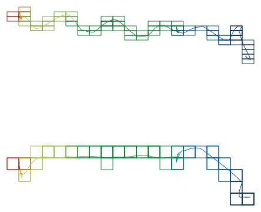
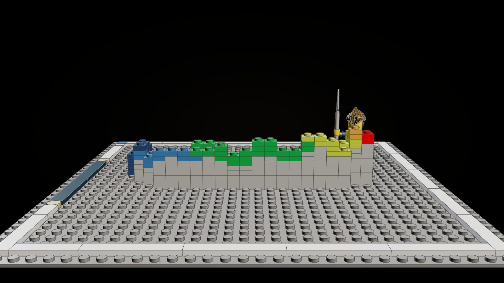
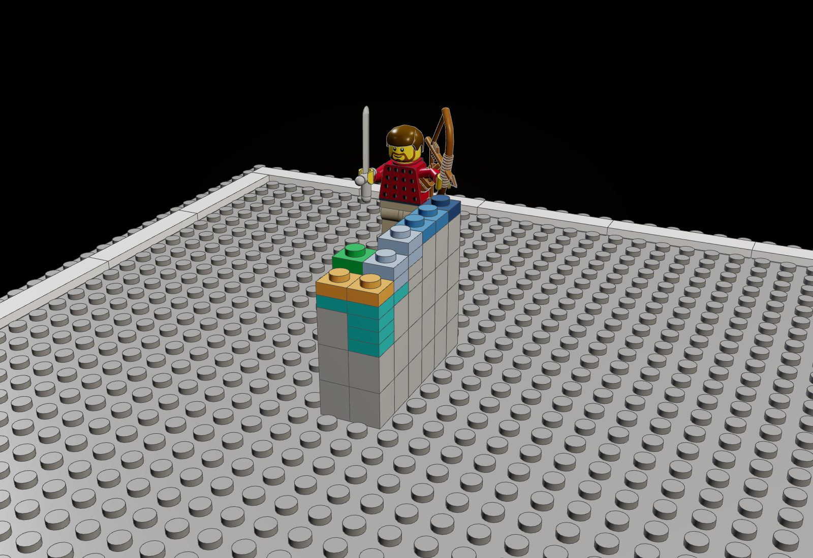
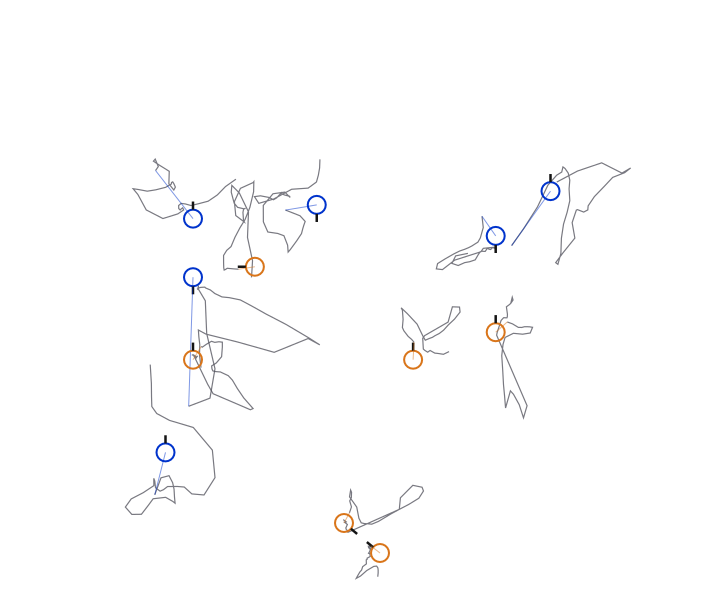
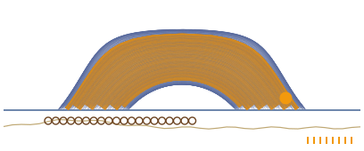
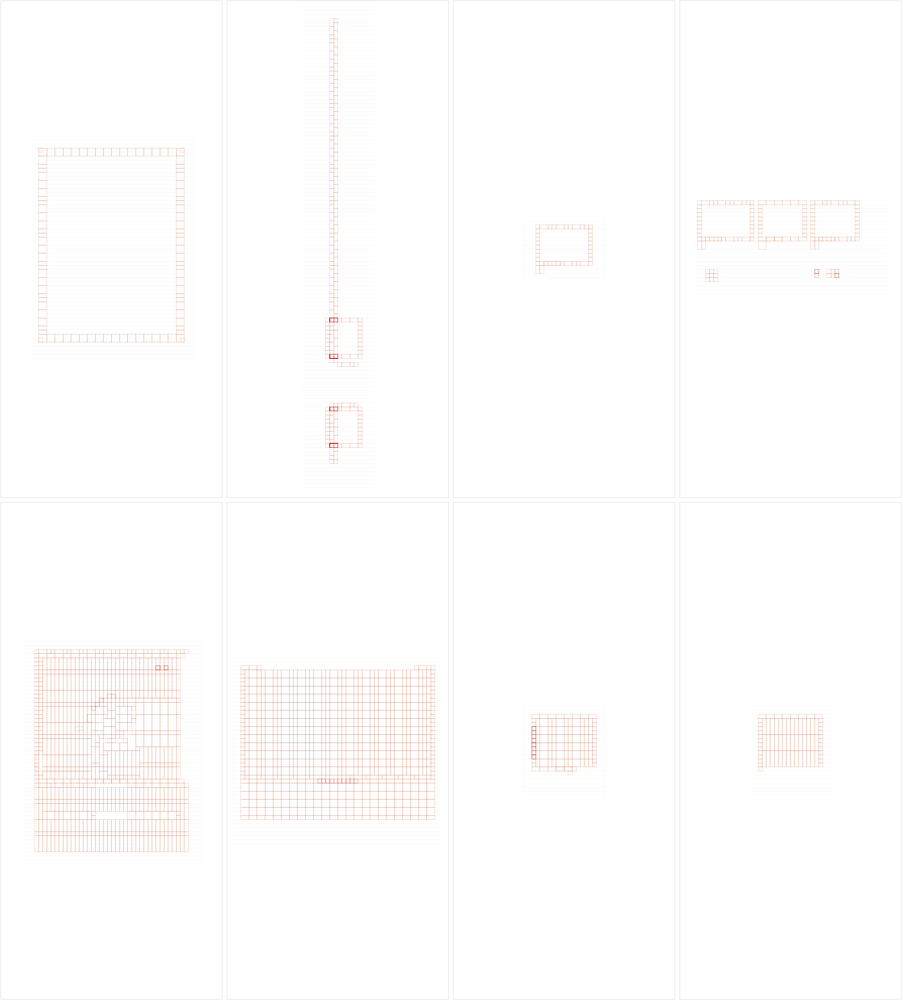
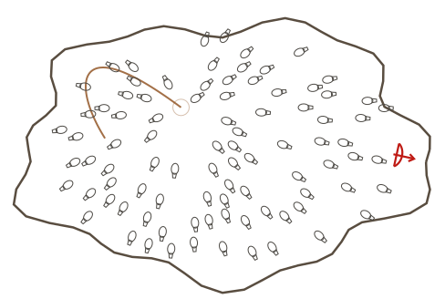

The Odyssey in Cascade
Cascade is FIELD.IO's open-source node-graph runtime (MIT, github.com/marcuswendt/cascade,
npm @field/cascade 0.7.1): Houdini's way of working (small typed operators, explicit data flow, parameters that hold
values, expressions or keyframes, explicit feedback, particles whose trails are geometry) in TypeScript, with a project that is an
ordinary folder of diffable .cascade graphs. The same graph cooks headless from the command line (Skia for Canvas 2D,
no browser) and plays in a static web player of a few hundred kilobytes. That is why it is here: the Odyssey's film, game and kits
are three stacks that do not talk, and each of these five graphs grew from a failure or an aberration of one of them. Every player
below is live: scrub it, change its parameters.
1 · A kit of a motion, not a moment
Grew from: Every kit of the Odyssey line is one moment posed, by the brief's own rule (the peak of the story, posed). The motion that moves the film lives elsewhere: tools/choreograph.js writes every figure's servos as timed keys on the voice clock (odyssey/choreo/OD-B01-S03.json), and film-readymades/choreo.js plays them back as a pure function of time. A gesture never left the film.
project.ChoreoHand reads the choreography sheet (Telemachus's slice of OD-B01-S03, or Odysseus's of OD-B22-S01, cut small by tools/extract.cjs), samples the blocking and every keyed layer, and runs the minifigure's forward kinematics (the arm pivots and the hand's grip from world/minifig.js) for the right hand. The hand is swept through the span as a trail, which is geometry; project.StudGrid quantizes it to studs across and plates up; project.Bricks draws the cells as the plates they become. The same graph writes the print (SvgExport), the frames (cascade run --frames) and, as a JSON asset, the cells the offline kit step builds.
Player: players/kit/, 194 KB (cascade build of kit.cascade), frames 1 to 240 at 24 a second. Scene OD-B01-S03, The Stranger at the Threshold: cineosis sign So (Solid perception).





Telemachus's welcome existed only as frames of a scene. Now the one graph that reads his sheet prints it, animates it, lets a visitor scrub it and change its sampling and grid on a phone, and hands its cells to kitlib, which builds the gesture in real parts and checks it: 186 pieces, 0 loose, 0 clashes.
2 · The attention knob
Grew from: The acted gate was measured: 4.8% of figure-drawings moving before the choreographer, 84.5% after (odyssey/choreo/density). The rise is the choreographer's last pass: wherever a figure sits under a threshold of motion (0.5% of its height per drawing) for half a second, it is given a piece of business on the fill layer. The threshold is a constant in a generator, and the loop that enforces it is buried in the rough pass.
The twelve figures of OD-B01-S03 stand at their marks in plan (project.Hall). A cascade.core.Feedback container runs one drawing per step (12 a second, the sheet's own rate): project.Business measures each figure's motion (the scene's scripted layers, act, work, walk, beat, react, from the sheet), invents business where it falls below the threshold, measures again, and carries the state forward; the business decays. cascade.pop.Trail makes trails of the loop's history. Rings: blue, the script moves the figure; orange, business was invented this drawing; grey, still.
Player: players/attention/, 210 KB (cascade build of attention.cascade), frames 1 to 534 at 12 a second. Scene OD-B01-S03, The Stranger at the Threshold: cineosis sign So (Solid perception).


The fill rule was a constant in tools/choreograph.js: to see the hall at another threshold meant regenerating the sheet and rendering the scene again. Here the threshold is a slider on a live loop whose state is explicit: at zero, with the script turned off, the hall is statues; at 300 it is frenzy; the critic checks both headless.
3 · Two clocks
Grew from: The film has one clock. Every figure, rig and prop is keyed on the voice (odyssey-choreo/1: "clock": "cut"). Calypso's seven years and the four days Odysseus spends building the raft run on it at the same rate, so the poem's time can be cut, never shown passing.
Two channels. project.Planks lays the raft's logs at the performer's rate (logs per second of film); project.SkyArcs turns the world's days (the performer's seconds times a ratio) into the sun's path across the southern sky of a latitude for every day lived, higher in summer, lower in winter, with the moon's beside it and a tick for each year. The logs are a Circle copied to points (cascade.geo.CopyToPoints).
Player: players/clocks/, 158 KB (cascade build of clocks.cascade), frames 1 to 288 at 24 a second. Scene OD-B05-S04, Building the Raft: cineosis sign Qu (Quotidian).


The world's rate was the performer's rate. Now it is a parameter: at 0.4 days a second the sky turns the poem's four days while the raft goes down; at 255.7 seven years pass over one raft, and the sun's arcs stay printable, a solargraph of the captivity.
4 · The illegal Odyssey
Grew from: The eight Troy and Ithaca modules were built before the strict check and fail it: 2,351 pairs of parts filling the same space (tools/forage/product/clicks.py). The hub of the line lists them as numbers to rebuild.
tools/clashes.py measures, offline and with the line's own checker, the box each pair of parts shares; the graph (project.Forbidden) draws only those volumes, card by card on one scale, in plan, front or side, and exports them as SVG: the kit of forbidden bricks.
Player: players/forbidden/, 247 KB (cascade build of forbidden.cascade), frames 1 to 96 at 24 a second. Scene OD-B04-S04, The Wooden Horse: cineosis sign Sn (Sonsign).


Clashes were a count in a table. Drawn, they say what the count hid: 84% of them are one mistake, a 2 x 8 plate (3034) in the same space as another part, most often a 2 x 4 tile (1,070 pairs): floors laid twice.
5 · The facing field
Grew from: 93 bows faced backward (tools/forage/product/fixbows.py): the forage placed each bow with its arrow toward its own -z and nothing said which way the archer faced. Facing was implicit, so it was wrong everywhere at once.
In the Cyclops' cave (project.FacingField) the blinded giant gropes along a path; every object gets an orientation attribute, N, pointing away from where his hand is now, and cascade.geo.CopyToPoints turns each glyph by it. The first instance is the bow (red). Switch the attribute off and every copy keeps its glyph's own facing.
Player: players/facing/, 157 KB (cascade build of facing.cascade), frames 1 to 240 at 24 a second. Scene OD-B09-S09, The Blinding: cineosis sign Im (Imprint).


Orientation was a matrix typed into each placement. Here it is data a generic operator reads: move the groping point and the whole cave turns away from it; untick one box and the 93 bows' failure comes back.
6 · The critics
The agent-facing contract. node odyssey/cascade/tools/verify.mjs cooks every graph headless with bounded
frames and a timeout (cascade run --frames --json --timeout), reads the JSON manifest, checks every listed frame exists,
is not blank and differs from the others, and asks one question per graph in the terms of its scene's cineosis sign: a variant of the
graph with a parameter changed is cooked and its pixels counted. No browser is opened.
| Graph | Sign | Static check | Frames | Cook (ms) | The critic asks | Answer |
|---|---|---|---|---|---|---|
| kit | So · Solid perception | passed | 4 | 611 | Is the hand's world solid: does the gesture quantize to cells, and does the offline kit check clean? | yes: cells 69, kit pieces 186, kit loose 0, kit clash 0 |
| attention | So · Solid perception | passed | 5 | 873 | Whose world is this: at threshold 0 with no script the hall stands still (no business), at 300 it is all business? | yes: statuesOrangePixels 0, frenzyOrangePixels 2932 |
| clocks | Qu · Quotidian | passed | 3 | 454 | Has everyday life become heroic: four days of sky under the raft, or seven years (more sun arcs at the higher ratio)? | yes: fourDaysSunPixels 739, sevenYearsSunPixels 37393 |
| forbidden | Sn · Sonsign | passed | 2 | 270 | Does the clash stand alone, answered by no build: nothing drawn at reveal 0, the forbidden volumes at reveal 1? | yes: revealedNothingRedPixels 0, revealedAllRedPixels 43267 |
| facing | Im · Imprint | passed | 3 | 314 | How has the world got inside the objects: with facing implicit, does every copy face the same way (the image changes)? | yes: explicitInkPixels 33085, implicitInkPixels 33039 |
Run 2026-09-30 01:37 UTC with Cascade 0.7.1: every graph passed. The report is verify.json.
Where Cascade takes us
- One graph cooks to print, motion, web and LDraw. The gesture graph is the SVG, the frame sequence, the player and (through one asset and kitlib) the checked kit. Nothing is re-authored between them, so they cannot drift apart.
- Visitors scrub and change parameters without the engine. The five players together weigh 966 KB;
the game and the film build are one 29 MB page each (play/odyssey-game.html). A parameter change cooks in tens of milliseconds
in a browser, measured in headless Chromium through
embed.js. - Explicit state beside a pure function of time. The choreography is a function of t, which is what lets the film scrub; the attention loop keeps state from drawing to drawing, which is what invented business is. Cascade holds both in one graph: a Feedback container re-simulates from the first drawing, so the stateful loop scrubs too.
- Headless CPU cooks with a JSON contract.
cascade run --frames --json --timeoutrenders on Skia at 7.4 to 13.0 (the whole sequence of each graph, measured bytools/media.mjs) frames a second on this machine and returns a manifest an agent can check, instead of scraping a browser at 1.2 frames a second. - Graphs are diffable direction. The fill threshold, the ratio of the two clocks, the kit scale are values in a
.cascadefile: a change of direction is a one-line diff a reviewer can read.
What it cannot do yet
- No shaded 3D. Cascade's scene view and
cascade.geo.Renderdraw wireframes and points; lights exist and shade nothing. The plates in the players are drawn by a project node (project.Bricks: three faces and a stud, painter-sorted, in 2D). The real LEGO look still comes from the forage renderer (tools/forage/look.js, three.js). - WebGPU needs a real GPU. Headless Chromium here renders with SwiftShader, and the CLI's Dawn host is optional; every node in this project is CPU and Canvas 2D so it runs everywhere.
- The kit step is outside the browser graph. Players reject file, Python and shell nodes; the LDraw build is Python
(kitlib), reading the cells the graph wrote as an asset, which the CLI host puts in
.cascade-cache/under a content hash. The frames runner saves only image outputs, and naming a node (--node) narrows the cook to its inputs, so an SVG export needs a second, whole-graph run. - Rough edges we hit. Node inputs take values but not expressions (only props do);
cascade.geo.Mergegives a primitive with no colour a transparent one, so strokes vanish until painted (project.Paint);cascade.pop.Trailwants full particle geometry (v, age, life, nextid) from any loop; there is no attribute-promote node; a module-levelconsthelper in a node is refused by the architecture check;setPropdoes not override an expression on the same prop; the player's own page offers play and a frame box but no parameters, soplayers/view.htmlbuilds them fromgraphs.jsonwithembed.js.
The files
odyssey/cascade/: the Cascade project (cascade.json,package.jsonpinning 0.7.1,AGENTS.md,README.md)kit.cascade,attention.cascade,clocks.cascade,forbidden.cascade,facing.cascade: the graphsnodes/: Bricks, Business, ChoreoHand, FacingField, Forbidden, Hall, Marks, Paint, Planks, Plot, SkyArcs, StudGrid, Viewlib/: the choreography sampler and minifigure kinematics, the hall, the viewassets/: gestures.json, hall.json, clashes.json, cut small from odyssey/choreo and odyssey/cardstools/: extract.cjs, clashes.py, gesture_kit.py, build.mjs, media.mjs, verify.mjsplayers/: the five static players and view.html, their controls- The Odyssey line · the dope sheet · cineosis